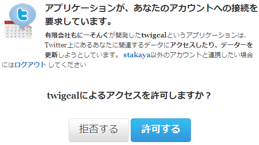
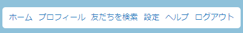

Twitterの設定方法
Twitterアプリケーションの許可

本画面でメールアドレスを入力し、「送信」ボタンをクリックしたら
この画面が表示されるはずです。
上記の画面が表示されたら「許可する」ボタンをクリックしてください。
アプリケーションの確認

アプリケーションを許可したあとTwitterのページに行きます。

右上のメニューから「設定」をクリックします。
中間部分のメニューから「連携アプリ」をクリックします。
TwiGcalのアプリが表示されたらアプリの設定が完了です。